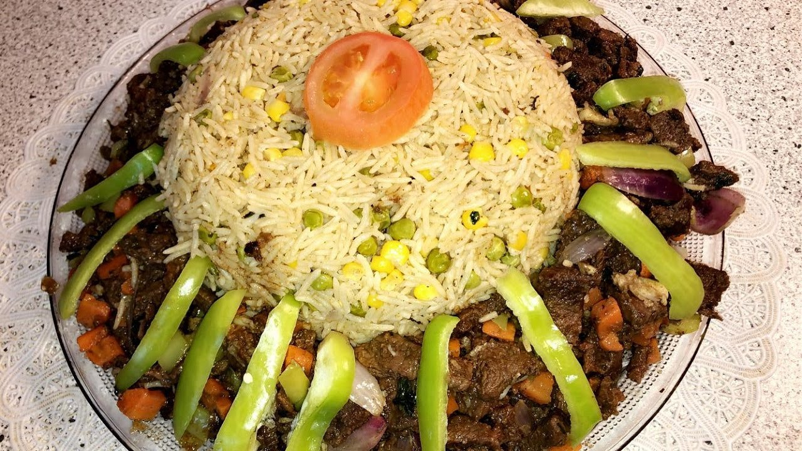

Bariis and Suqaar (Rice & Spiced Meat)

Description
Bariis and Suqaar is a traditional Somali dish that
combines fragrant rice (bariis) with tender, spiced meat (suqaar). This
dish is a staple in Somali cuisine and is cherished for its rich flavors
and comforting qualities.
The rice is typically cooked with a blend of spices such as turmeric,
cumin, and cardamom, giving it a vibrant yellow color and a subtle
aromatic taste. The suqaar, which is diced meat (often beef or lamb), is
seasoned with garlic, onions, and a variety of spices before being sauteed
until tender.
Bariis and Suqaar is often served with a side of banana,
salad, or a spicy chutney, adding layers of flavor and texture to the
meal. It is enjoyed during festive occasions, family gatherings, and
everyday meals, reflecting the cultural richness and hospitality of
Somalia.
Ingredients For Bariis
- 1 cup long-grain rice (Basmati rice is commonly used)/li>
- 2 cups water
- 1 tablespoon vegetable oil
- 1 teaspoon ground turmeric
- 1/2 teaspoon ground cumin
- 3-4 green cardamom pods, lightly crushed
- Salt to taste
Ingredients for Suqaar (Spiced Meat)
- 1 lb beef or lamb, cut into small cubes
- 2 tablespoons vegetable oil
- 1 large onion, finely chopped
- 3 cloves garlic, minced
- 1 teaspoon ground coriander
- 1/2 teaspoon ground cumin
- 1/2 teaspoon paprika
- 1/4 teaspoon ground black pepper
- Salt to taste
- Fresh cilantro or parsley, chopped (for garnish)
Steps
For Bariis (Rice)
-
Rinse the rice under cold water until the water runs clear. Drain well.
-
Heat the vegetable oil in a pot over medium heat. Add the rice and stir
to coat with oil.
-
Add the turmeric, ground cumin, and crushed cardamom pods to the rice.
Stir for about 1 minute to toast the spices.
- Pour in the water and add salt to taste. Bring to a boil.
-
Reduce the heat to low, cover, and simmer for 15-20 minutes or until the
rice is tender and the water is absorbed. Remove from heat and let it
sit, covered, for 5 minutes before fluffing with a fork.
For Suqaar (Spiced Meat)
- Heat vegetable oil in a large skillet over medium-high heat.
-
Add chopped onions and saute until softened and translucent, about 3-4
minutes.
- Add minced garlic and saute for another minute until fragrant.
-
Add the cubed meat to the skillet and cook, stirring occasionally, until
browned on all sides.
-
Stir in ground coriander, ground cumin, paprika, black pepper, and salt
to taste. Cook for another 2-3 minutes to allow the flavors to meld.
-
Remove from heat and garnish with chopped fresh cilantro or parsley.